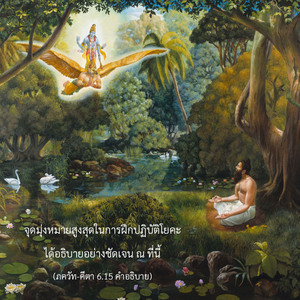
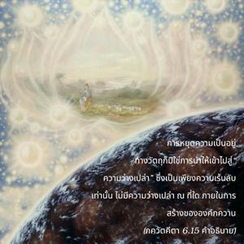
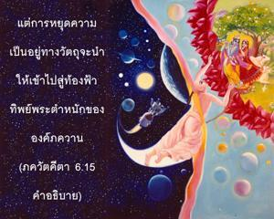
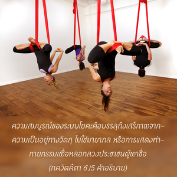

จากการฝึกปฏิบัติการควบคุมร่างกาย จิตใจ และกิจกรรมอยู่เสมอ นักทิพย์นิยมผู้มีฤทธิ์สามารถประมาณจิตใจของตนเองได้ และบรรลุถึงอาณาจักรแห่งองค์ภควานฺ (หรือพระตำหนักขององค์กฺฤษฺณ) ด้วยการยุติความเป็นอยู่ทางวัตถุ




จุดมุ่งหมายสูงสุดในการฝึกปฏิบัติโยคะได้อธิบายอย่างชัดเจน ณ ที่นี้ การฝึกปฏิบัติโยคะไม่ใช่เพื่อบรรลุผลประโยชน์ทางวัตถุใดๆ แต่เพื่อให้สามารถหยุดความเป็นอยู่ทางวัตถุทั้งปวง ตาม ภควัท-คีตา ผู้ที่แสวงหาการพัฒนาสุขภาพ หรือมุ่งหวังความสมบูรณ์ทางวัตถุไม่ใช่โยคี การหยุดความเป็นอยู่ทางวัตถุก็ใช่ใช่การนำให้เข้าไปสู่ “ความว่างเปล่า” ซึ่งเป็นเพียงความเร้นลับเท่านั้น ไม่มีความว่างเปล่าที่ใดภายในการสร้างขององค์ภควานฺ แต่การหยุดความเป็นอยู่ทางวัตถุจะนำให้เข้าไปสู่ท้องฟ้าทิพย์ พระตำหนักขององค์ภควานฺ ได้อธิบายไว้อย่างชัดเจนใน ภควัท-คีตา เช่นกันว่า เป็นสถานที่ที่ไม่จำเป็นต้องมีดวงอาทิตย์ ดวงจันทร์ หรือไฟฟ้า ดาวเคราะห์ทั้งหลายในอาณาจักรทิพย์มีรัศมีในตัวเอง เหมือนดวงอาทิตย์ในท้องฟ้าวัตถุ อาณาจักรขององค์ภควานฺจะอยู่ทุกหนทุกแห่ง แต่ท้องฟ้าทิพย์ และดาวเคราะห์ที่นั่นเรียกว่า ปรํ ธาม หรือที่พำนักพักพิงที่สูงกว่า
โยคีผู้บรรลุที่เข้าใจองค์ศฺรีกฺฤษฺณอย่างสมบูรณ์ได้กล่าวไว้อย่างชัดเจน ณ ที่นี้โดยองค์ภควานฺเองว่า (มตฺ-จิตฺตห์, มตฺ-ปรห์, มตฺ-สฺถานมฺ) เขาสามารถได้รับความสงบอย่างแท้จริง และในที่สุดจะสามารถบรรลุถึงพระตำหนักสูงสุดขององค์ภควานฺ กฺฤษฺณโลก มีนามว่า โคโลก วฺฤนฺทาวน ใน พฺรหฺม-สํหิตา (5.37) ได้กล่าวไว้อย่างชัดเจนว่า โคโลก เอว นิวสตฺยฺ อขิลาตฺม-ภูตห์ ถึงแม้ว่าองค์ภควานฺ ทรงประทับอยู่ที่พระตำหนัก ส ไว มนห์ กฺฤษฺณ-ปทารวินฺทโยห์ ของพระองค์อยู่เสมอ แต่พระองค์ทรงเป็น พฺรหฺมนฺ ที่แผ่กระจายไปทั่วและทรงเป็น ปรมาตฺมา ผู้ทรงประทับอยู่ในทุกร่างเช่นกันด้วยพลังงานทิพย์ที่สูงกว่าของพระองค์ ไม่มีใครสามารถบรรลุถึงท้องฟ้าทิพย์ (ไวกุณฺฐ ) หรือเข้าไปในพระตำหนักอมตะของพระองค์ (โคโลก วฺฤนฺทาวน) ได้โดยปราศจากความเข้าใจองค์กฺฤษฺณ และอวตารในรูปพระวิษณุของพระองค์อย่างถูกต้อง ฉะนั้น บุคคลผู้ทำงานในกฺฤษฺณจิตสำนึกจึงเป็นโยคีที่สมบูรณ์ เพราะว่าจิตใจของเขาซึบซาบอยู่ในกิจกรรมขององค์กฺฤษฺณเสมอ (ส ไว มนห์ กฺฤษฺณ-ปทารวินฺทโยห์) ในคัมภีร์พระเวท (เศฺวตาศฺวตร อุปนิษทฺ 3.8) เราได้เรียนรู้เช่นกันว่า ตมฺ เอว วิทิตฺวาติ มฺฤตฺยุมฺ เอติ “เขาสามารถข้ามพ้นวิถีแห่งการเกิดและการตายด้วยการเข้าใจบุคลิกภาพสูงสุดแห่งพระเจ้าองค์กฺฤษฺณเท่านั้น” หรืออีกนัยหนึ่ง ความสมบูรณ์ของระบบโยคะก็คือการบรรลุถึงเสรีภาพจากความเป็นอยู่ทางวัตถุ ไม่ใช่มายากล หรือการแสดงท่ากายกรรมเพื่อหลอกลวงประชาชนผู้พาซื่อ